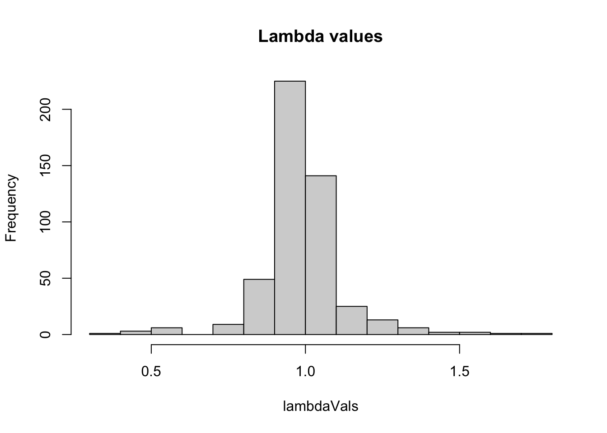
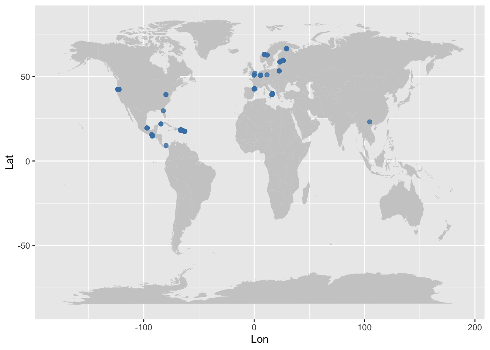

Chapter 18 Number of populations per species study
## Var1 Freq
## 1 1 27
## 2 2 7
## 3 3 4
## 4 4 6
## 5 6 4
## 6 7 3
## 7 8 2
## 8 18 1Code
SPECIES_O$SpeciesAccepted <- fct_reorder(SPECIES_O$SpeciesAccepted, SPECIES_O$StudyStart, .desc = FALSE)
ggplot(SPECIES_O, aes(SpeciesAccepted, color=OrganismType))+
geom_linerange(aes(x= SpeciesAccepted , ymin=StudyStart, ymax=StudyEnd))+
coord_flip()+
theme(legend.position = c(0.2, 0.8))+
ylab("")+
xlab("")+
rlt_theme+
theme(axis.text.x = element_text(color = "grey20", size = 9, angle = 90, hjust = .5, vjust = .5, face = "plain"),
axis.text.y = element_text(color = "grey20", size = 7, angle = 0, hjust = 1, vjust = 0, face = "plain"),
axis.title.x = element_text(color = "grey20", size = 12, angle = 0, hjust = .5, vjust = 0, face = "plain"),
axis.title.y = element_text(color = "grey20", size = 12, angle = 90, hjust = .5, vjust = .5, face = "plain"))
## Saving 7 x 5 in imageCode
##
## 2 3 4 5 6 7 8 9 10 11 12 13 14 16 17 19 26 30
## 2 211 37 2 82 43 26 47 28 2 9 6 86 53 7 1 1 3##
## Epiphyte Herbaceous perennial
## 248 399Code
## `stat_bin()` using `bins = 30`. Pick better value with
## `binwidth`.## Warning: Removed 1 rows containing non-finite values (`stat_bin()`).
## Saving 7 x 5 in image
## `stat_bin()` using `bins = 30`. Pick better value with
## `binwidth`.## Warning: Removed 1 rows containing non-finite values (`stat_bin()`).
Getting the whole database for orchids
## [1] "mat" "SpeciesAuthor" "SpeciesAccepted"
## [4] "CommonName" "Genus" "Family"
## [7] "Order" "Class" "Phylum"
## [10] "Kingdom" "OrganismType" "DicotMonoc"
## [13] "AngioGymno" "Authors" "Journal"
## [16] "YearPublication" "DOI_ISBN" "AdditionalSource"
## [19] "StudyDuration" "StudyStart" "StudyEnd"
## [22] "ProjectionInterval" "NumberPopulations" "MatrixCriteriaSize"
## [25] "MatrixCriteriaOntogeny" "MatrixCriteriaAge" "MatrixPopulation"
## [28] "Lat" "Lon" "Altitude"
## [31] "Country" "Continent" "Ecoregion"
## [34] "StudiedSex" "MatrixComposite" "MatrixTreatment"
## [37] "MatrixCaptivity" "MatrixStartYear" "MatrixStartSeason"
## [40] "MatrixStartMonth" "MatrixEndYear" "MatrixEndSeason"
## [43] "MatrixEndMonth" "MatrixSplit" "MatrixFec"
## [46] "Observation" "MatrixDimension" "SurvivalIssue"
## [49] "AnnualPeriodicity"## A COM(P)ADRE database ('CompadreDB') object with 46 SPECIES and 647 MATRICES.
##
## # A tibble: 647 × 59
## mat MatrixID SpeciesAuthor SpeciesAccepted CommonName Kingdom Phylum
## <list> <int> <chr> <chr> <chr> <chr> <chr>
## 1 <CompdrMt> 238285 Caladenia_amon… Caladenia amon… <NA> Plantae Trach…
## 2 <CompdrMt> 238286 Caladenia_argo… Caladenia argo… <NA> Plantae Trach…
## 3 <CompdrMt> 238287 Caladenia_clav… Caladenia clav… <NA> Plantae Trach…
## 4 <CompdrMt> 238288 Caladenia_eleg… Caladenia eleg… <NA> Plantae Trach…
## 5 <CompdrMt> 238289 Caladenia_gran… Caladenia gran… <NA> Plantae Trach…
## 6 <CompdrMt> 238290 Caladenia_macr… Caladenia macr… <NA> Plantae Trach…
## 7 <CompdrMt> 238291 Caladenia_oeno… Caladenia oeno… <NA> Plantae Trach…
## 8 <CompdrMt> 238292 Caladenia_rose… Caladenia rose… <NA> Plantae Trach…
## 9 <CompdrMt> 238293 Caladenia_vali… Caladenia vali… <NA> Plantae Trach…
## 10 <CompdrMt> 238565 Epipactis_atro… Epipactis atro… Darkred h… Plantae Trach…
## # ℹ 637 more rows
## # ℹ 52 more variables: Class <chr>, Order <chr>, Family <chr>, Genus <chr>,
## # Species <chr>, Infraspecies <chr>, InfraspeciesType <chr>,
## # OrganismType <chr>, DicotMonoc <chr>, AngioGymno <chr>, Authors <chr>,
## # Journal <chr>, SourceType <chr>, OtherType <chr>, YearPublication <chr>,
## # DOI_ISBN <chr>, AdditionalSource <chr>, StudyDuration <dbl>,
## # StudyStart <chr>, StudyEnd <chr>, ProjectionInterval <chr>, …## A COM(P)ADRE database ('CompadreDB') object with 0 SPECIES and 0 MATRICES.
##
## # A tibble: 0 × 59
## # ℹ 59 variables: mat <list>, MatrixID <int>, SpeciesAuthor <chr>,
## # SpeciesAccepted <chr>, CommonName <chr>, Kingdom <chr>, Phylum <chr>,
## # Class <chr>, Order <chr>, Family <chr>, Genus <chr>, Species <chr>,
## # Infraspecies <chr>, InfraspeciesType <chr>, OrganismType <chr>,
## # DicotMonoc <chr>, AngioGymno <chr>, Authors <chr>, Journal <chr>,
## # SourceType <chr>, OtherType <chr>, YearPublication <chr>, DOI_ISBN <chr>,
## # AdditionalSource <chr>, StudyDuration <dbl>, StudyStart <chr>, …Code
Code
## A COM(P)ADRE database ('CompadreDB') object with 45 SPECIES and 484 MATRICES.
##
## # A tibble: 484 × 73
## mat MatrixID SpeciesAuthor SpeciesAccepted CommonName Kingdom Phylum
## <list> <int> <chr> <chr> <chr> <chr> <chr>
## 1 <CompdrMt> 238285 Caladenia_amon… Caladenia amon… <NA> Plantae Trach…
## 2 <CompdrMt> 238286 Caladenia_argo… Caladenia argo… <NA> Plantae Trach…
## 3 <CompdrMt> 238287 Caladenia_clav… Caladenia clav… <NA> Plantae Trach…
## 4 <CompdrMt> 238288 Caladenia_eleg… Caladenia eleg… <NA> Plantae Trach…
## 5 <CompdrMt> 238289 Caladenia_gran… Caladenia gran… <NA> Plantae Trach…
## 6 <CompdrMt> 238290 Caladenia_macr… Caladenia macr… <NA> Plantae Trach…
## 7 <CompdrMt> 238291 Caladenia_oeno… Caladenia oeno… <NA> Plantae Trach…
## 8 <CompdrMt> 238292 Caladenia_rose… Caladenia rose… <NA> Plantae Trach…
## 9 <CompdrMt> 238293 Caladenia_vali… Caladenia vali… <NA> Plantae Trach…
## 10 <CompdrMt> 238565 Epipactis_atro… Epipactis atro… Darkred h… Plantae Trach…
## # ℹ 474 more rows
## # ℹ 66 more variables: Class <chr>, Order <chr>, Family <chr>, Genus <chr>,
## # Species <chr>, Infraspecies <chr>, InfraspeciesType <chr>,
## # OrganismType <chr>, DicotMonoc <chr>, AngioGymno <chr>, Authors <chr>,
## # Journal <chr>, SourceType <chr>, OtherType <chr>, YearPublication <chr>,
## # DOI_ISBN <chr>, AdditionalSource <chr>, StudyDuration <dbl>,
## # StudyStart <chr>, StudyEnd <chr>, ProjectionInterval <chr>, …## A COM(P)ADRE database ('CompadreDB') object with 43 SPECIES and 360 MATRICES.
##
## # A tibble: 360 × 73
## mat MatrixID SpeciesAuthor SpeciesAccepted CommonName Kingdom Phylum
## <list> <int> <chr> <chr> <chr> <chr> <chr>
## 1 <CompdrMt> 238285 Caladenia_amon… Caladenia amon… <NA> Plantae Trach…
## 2 <CompdrMt> 238286 Caladenia_argo… Caladenia argo… <NA> Plantae Trach…
## 3 <CompdrMt> 238287 Caladenia_clav… Caladenia clav… <NA> Plantae Trach…
## 4 <CompdrMt> 238288 Caladenia_eleg… Caladenia eleg… <NA> Plantae Trach…
## 5 <CompdrMt> 238289 Caladenia_gran… Caladenia gran… <NA> Plantae Trach…
## 6 <CompdrMt> 238290 Caladenia_macr… Caladenia macr… <NA> Plantae Trach…
## 7 <CompdrMt> 238291 Caladenia_oeno… Caladenia oeno… <NA> Plantae Trach…
## 8 <CompdrMt> 238292 Caladenia_rose… Caladenia rose… <NA> Plantae Trach…
## 9 <CompdrMt> 238293 Caladenia_vali… Caladenia vali… <NA> Plantae Trach…
## 10 <CompdrMt> 238565 Epipactis_atro… Epipactis atro… Darkred h… Plantae Trach…
## # ℹ 350 more rows
## # ℹ 66 more variables: Class <chr>, Order <chr>, Family <chr>, Genus <chr>,
## # Species <chr>, Infraspecies <chr>, InfraspeciesType <chr>,
## # OrganismType <chr>, DicotMonoc <chr>, AngioGymno <chr>, Authors <chr>,
## # Journal <chr>, SourceType <chr>, OtherType <chr>, YearPublication <chr>,
## # DOI_ISBN <chr>, AdditionalSource <chr>, StudyDuration <dbl>,
## # StudyStart <chr>, StudyEnd <chr>, ProjectionInterval <chr>, …Code
## A COM(P)ADRE database ('CompadreDB') object with 43 SPECIES and 360 MATRICES.
##
## # A tibble: 360 × 73
## mat MatrixID SpeciesAuthor SpeciesAccepted CommonName Kingdom Phylum
## <list> <int> <chr> <chr> <chr> <chr> <chr>
## 1 <CompdrMt> 238285 Caladenia_amon… Caladenia amon… <NA> Plantae Trach…
## 2 <CompdrMt> 238286 Caladenia_argo… Caladenia argo… <NA> Plantae Trach…
## 3 <CompdrMt> 238287 Caladenia_clav… Caladenia clav… <NA> Plantae Trach…
## 4 <CompdrMt> 238288 Caladenia_eleg… Caladenia eleg… <NA> Plantae Trach…
## 5 <CompdrMt> 238289 Caladenia_gran… Caladenia gran… <NA> Plantae Trach…
## 6 <CompdrMt> 238290 Caladenia_macr… Caladenia macr… <NA> Plantae Trach…
## 7 <CompdrMt> 238291 Caladenia_oeno… Caladenia oeno… <NA> Plantae Trach…
## 8 <CompdrMt> 238292 Caladenia_rose… Caladenia rose… <NA> Plantae Trach…
## 9 <CompdrMt> 238293 Caladenia_vali… Caladenia vali… <NA> Plantae Trach…
## 10 <CompdrMt> 238565 Epipactis_atro… Epipactis atro… Darkred h… Plantae Trach…
## # ℹ 350 more rows
## # ℹ 66 more variables: Class <chr>, Order <chr>, Family <chr>, Genus <chr>,
## # Species <chr>, Infraspecies <chr>, InfraspeciesType <chr>,
## # OrganismType <chr>, DicotMonoc <chr>, AngioGymno <chr>, Authors <chr>,
## # Journal <chr>, SourceType <chr>, OtherType <chr>, YearPublication <chr>,
## # DOI_ISBN <chr>, AdditionalSource <chr>, StudyDuration <dbl>,
## # StudyStart <chr>, StudyEnd <chr>, ProjectionInterval <chr>, …## Min. 1st Qu. Median Mean 3rd Qu. Max.
## 0.3888 0.9407 0.9993 0.9891 1.0313 1.7760
Code
Code
Compadre_flagged <- cdb_flag(index_O)
x <- subset(Compadre_flagged, check_NA_A == FALSE & check_ergodic == TRUE)
lambdaVals <- sapply(matA(x), popdemo::eigs, what=“lambda”) summary(lambdaVals) hist(lambdaVals, main = “Lambda values”)
Code
Compadre_flagged_epi <- cdb_flag(epi)
x_epi <- subset(Compadre_flagged_epi, check_NA_A == FALSE & check_ergodic == TRUE)
#sapply(matA(x_epi), popdemo::eigs, what="lambda")
library(purrr)
lambda_epi <- map_dbl(matA(x_epi), ~popdemo::eigs(.x, what="lambda"))
#Or with popbio, which avoids some warning messages…
lambda_terr <- map_dbl(matA(terr), ~popbio::lambda(.x))## Min. 1st Qu. Median Mean 3rd Qu. Max.
## 0.3888 0.9715 1.0003 0.9716 1.0124 1.3592
## Min. 1st Qu. Median Mean 3rd Qu. Max.
## 0.4089 0.9329 0.9988 0.9973 1.0516 1.7760
Code
df_Lamb_epi=as.data.frame(lambda_epi)
df_Lamb_epi=df_Lamb_epi %>%
add_column(Habit_Type = "Epiphyte") %>%
rename(lambda=lambda_epi)
df_Lamb_terr=as.data.frame(lambda_terr)
df_Lamb_terr=df_Lamb_terr %>%
add_column(Habit_Type = "Terrestrial")%>%
rename(lambda=lambda_terr)
ALL_Lambdas=rbind(df_Lamb_epi, df_Lamb_terr)Code
## `stat_bin()` using `bins = 30`. Pick better value with
## `binwidth`.
## Saving 7 x 5 in image
## `stat_bin()` using `bins = 30`. Pick better value with
## `binwidth`.The number of populations
Code
## # A tibble: 43 × 2
## SpeciesAccepted n_populations
## <chr> <int>
## 1 Lepanthes rubripetala 20
## 2 Lepanthes rupestris 14
## 3 Lepanthes caritensis 13
## 4 Cypripedium calceolus 8
## 5 Orchis purpurea 7
## 6 Neotinea ustulata 6
## 7 Serapias cordigera 6
## 8 Cypripedium fasciculatum 4
## 9 Epipactis atrorubens 4
## 10 Oeceoclades maculata 4
## # ℹ 33 more rowsCode
## A COM(P)ADRE database ('CompadreDB') object with 3 SPECIES and 88 MATRICES.
##
## # A tibble: 88 × 74
## mat MatrixID SpeciesAuthor SpeciesAccepted CommonName Kingdom Phylum
## <list> <int> <chr> <chr> <chr> <chr> <chr>
## 1 <CompdrMt> 238838 Lepanthes_rubr… Lepanthes rubr… <NA> Plantae Magno…
## 2 <CompdrMt> 239751 Lepanthes_cari… Lepanthes cari… <NA> Plantae Magno…
## 3 <CompdrMt> 239752 Lepanthes_cari… Lepanthes cari… <NA> Plantae Magno…
## 4 <CompdrMt> 239756 Lepanthes_cari… Lepanthes cari… <NA> Plantae Magno…
## 5 <CompdrMt> 239764 Lepanthes_cari… Lepanthes cari… <NA> Plantae Magno…
## 6 <CompdrMt> 239769 Lepanthes_cari… Lepanthes cari… <NA> Plantae Magno…
## 7 <CompdrMt> 239771 Lepanthes_cari… Lepanthes cari… <NA> Plantae Magno…
## 8 <CompdrMt> 239772 Lepanthes_cari… Lepanthes cari… <NA> Plantae Magno…
## 9 <CompdrMt> 239775 Lepanthes_cari… Lepanthes cari… <NA> Plantae Magno…
## 10 <CompdrMt> 239776 Lepanthes_cari… Lepanthes cari… <NA> Plantae Magno…
## # ℹ 78 more rows
## # ℹ 67 more variables: Class <chr>, Order <chr>, Family <chr>, Genus <chr>,
## # Species <chr>, Infraspecies <chr>, InfraspeciesType <chr>,
## # OrganismType <chr>, DicotMonoc <chr>, AngioGymno <chr>, Authors <chr>,
## # Journal <chr>, SourceType <chr>, OtherType <chr>, YearPublication <chr>,
## # DOI_ISBN <chr>, AdditionalSource <chr>, StudyDuration <dbl>,
## # StudyStart <chr>, StudyEnd <chr>, ProjectionInterval <chr>, …Code
## Warning: Removed 27 rows containing missing values (`geom_point()`).
18.1 Important to include only matrices that are annual.
Unless we data wrangle the life span so it represent a year worth instead of life span.
Code
# function to calculate life expectancy
lifeExpectancy <- function(matU, startLife) {
N <- solve(diag(nrow(matU)) - matU)
return(colSums(N)[startLife])
}
compadre_life_expect <- x2 %>%
filter(ProjectionInterval >0.999) |>
filter(MatrixComposite == "Mean", # filter is the dplyr version of subset
MatrixTreatment == "Unmanipulated",
MatrixCaptivity == "W",
#ProjectionInterval == "1"
) %>%
mutate(StageID = cdb_id_stages(.)) %>%
cdb_collapse(columns = "StageID") %>%
cdb_flag() %>%
filter(check_NA_U == FALSE,
check_zero_U == FALSE,
check_singular_U == FALSE) %>%
mutate(matU = matU(.), start_life = mpm_first_active(.)) %>%
mutate(life_expectancy = mapply(lifeExpectancy, matU, start_life)) %>%
# filter(life_expectancy >= 1) %>%
mutate(OrganismType = reorder(OrganismType, life_expectancy, median))
ggplot2::ggplot(compadre_life_expect, aes(OrganismType, life_expectancy)) +
geom_boxplot() +
scale_y_log10() +
coord_flip() +
labs(x = NULL, y = "Life expectancy (years)")+
rlt_theme## Warning: Removed 1 rows containing non-finite values
## (`stat_boxplot()`).
## Saving 7 x 5 in image## Warning: Removed 1 rows containing non-finite values
## (`stat_boxplot()`).Test difference in life span.
## [1] Herbaceous perennial Epiphyte
## Levels: Epiphyte Herbaceous perennial##
## Welch Two Sample t-test
##
## data: life_expectancy by OrganismType
## t = 0.69168, df = 16.201, p-value = 0.4989
## alternative hypothesis: true difference in means between group Epiphyte and group Herbaceous perennial is not equal to 0
## 95 percent confidence interval:
## -6.806699 13.409443
## sample estimates:
## mean in group Epiphyte mean in group Herbaceous perennial
## 11.556907 8.255534##
## Shapiro-Wilk normality test
##
## data: compadre_life_expect$life_expectancy
## W = 0.63295, p-value = 9.944e-08## Loading required package: carData##
## Attaching package: 'car'## The following object is masked _by_ '.GlobalEnv':
##
## ellipse## The following object is masked from 'package:dplyr':
##
## recode## The following object is masked from 'package:purrr':
##
## someCode
## Levene's Test for Homogeneity of Variance (center = median)
## Df F value Pr(>F)
## group 1 0.1166 0.7352
## 30Use robust Approach
##
## Attaching package: 'WRS2'## The following objects are masked _by_ '.GlobalEnv':
##
## akp.effect, ancboot, ancova, binband, bwtrim, discANOVA, discmcp,
## discstep, Dqcomhd, lincon, mcp2a, mcp2atm, mcppb20, med1way,
## med2way, medpb2, mest, mestse, mom, msmedse, onesampb, onestep,
## pairdepb, pb2gen, pbad2way, pball, pbcor, Qanova, qcomhd, rmanova,
## rmanovab, rmmcp, rungen, runmbo, runmean, sppba, sppbb, sppbi,
## t1way, t1waybt, t2way, t3way, trimcibt, trimse, tsplit, twocor,
## twopcor, winall, wincor, winmean, winse, winvar, wmcpAKP, yuen,
## yuen.effect.ci, yuenbt, yuend, ZYmediateCode
source("/Users/rlt/Dropbox/METAS+COHORT_D/Rallfun-v38.txt", chdir = T)
#source("/Users/rlt/Dropbox/Ackermanstuff/Pollinator_Interaction/Specificity_Index_pollinators/Rallfun-v38.txt", chdir = T) ## Work laptop Computer
#source("/Users/raymondtremblay/Dropbox/METAS+COHORT_D/Rallfun-v38.txt", chdir = T) #When used on Monique## [1] Herbaceous perennial Epiphyte
## Levels: Epiphyte Herbaceous perennialCode
## # A tibble: 21 × 2
## life_expectancy OrganismType
## <dbl> <fct>
## 1 6.96 Herbaceous perennial
## 2 2.27 Herbaceous perennial
## 3 5.89 Herbaceous perennial
## 4 3.01 Herbaceous perennial
## 5 3.65 Herbaceous perennial
## 6 2.31 Herbaceous perennial
## 7 3.94 Herbaceous perennial
## 8 4.48 Herbaceous perennial
## 9 2.55 Herbaceous perennial
## 10 21.2 Herbaceous perennial
## # ℹ 11 more rowsCode
## $ci
## [1] -6.792134 3.155724
##
## $test.stat
## [1] -0.7572641
##
## $p.value
## [1] 0.4438
##
## $est.1
## [1] 5.454196
##
## $est.2
## [1] 7.272401
##
## $est.dif
## [1] -1.818205
##
## $n1
## [1] 20
##
## $n2
## [1] 12## Welcome to popdemo! This is version 1.3-0
## Use ?popdemo for an intro, or browseVignettes('popdemo') for vignettes
## Citation for popdemo is here: doi.org/10.1111/j.2041-210X.2012.00222.x
## Development and legacy versions are here: github.com/iainmstott/popdemoCode
## Warning in index$dim <- numeric(nrow(index_O)): Coercing LHS to a listCode
# loop through all rows of Compadre
for (i in seq_len(nrow(Compadre))) {
Compadre$dim[i] <- nrow(Compadre$matA[[i]])
}
# function to determine whether matrix 'mat' has any stages with no transitions
NullStages <- function(mat) any(colSums(mat) == 0)
# apply function to every element of A
Compadre$null_stages <- sapply(Compadre$matA, NullStages)
NullStages(Compadre$matA[[1]]) # apply function to single element## [1] FALSE